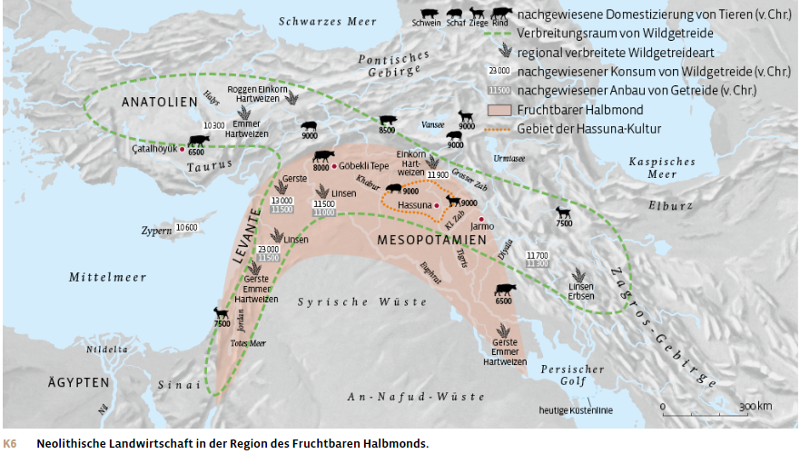
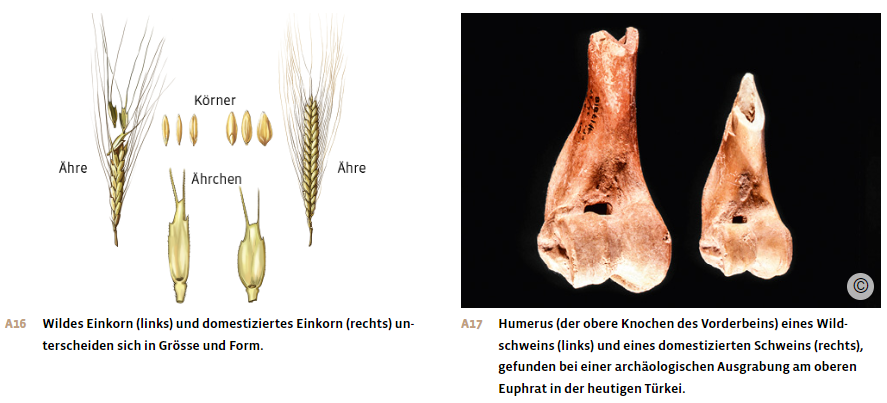
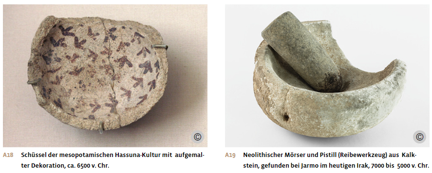
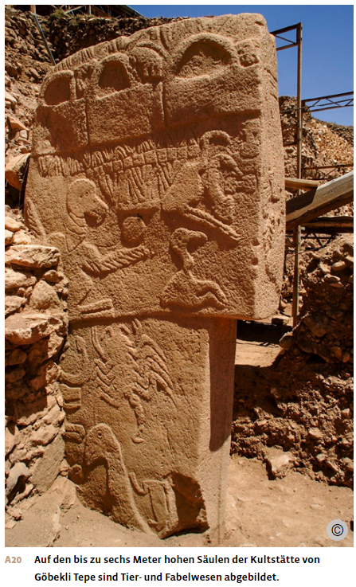
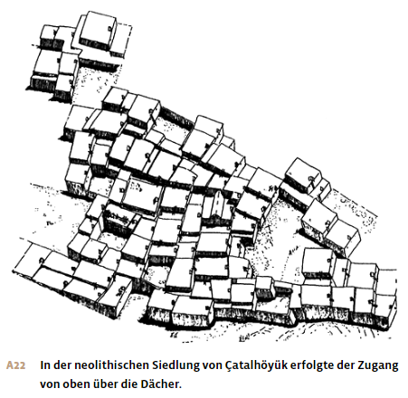
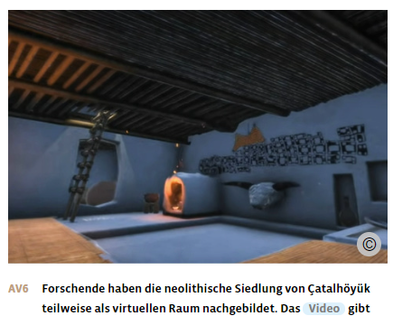

Materialdossier: Neolithisierung – Anfänge
Vollständiger Inhalt des Unterrichtsdossiers · Neolithisierung_Anfänge (1).docx
Die Steinzeit: Neolithisierung
Zeitenwende im Fruchtbaren Halbmond

Beginn der Neolithisierung
Vor etwa 13’500 Jahren begannen die ersten Menschen damit, Landwirtschaft zu betreiben. Sie bauten wildes Getreide an und züchteten es. Später kamen Hülsenfrüchte dazu. Darauf folgte die Zähmung von Wildtieren: Schafe und Ziegen wurden gezüchtet und später auch Rinder. Zu Beginn zogen die Menschen, die Landwirtschaft betrieben und Vorräte anlegten, nach der Ernte weiter. Doch bald wurden diese Gruppen sesshaft. Sie begannen, in permanenten Siedlungen zu leben, und das Jagen und Sammeln rückte mehr und mehr in den Hintergrund.
Dieser grundlegende Wandel vom aneignenden zum produzierenden Wirtschaften war ein sehr langfristiger Prozess, der in der Geschichtswissenschaft und Archäologie als Neolithisierung bezeichnet wird. Denn er markiert den Übergang von der Altsteinzeit zur Jungsteinzeit, dem sogenannten Neolithikum.
Warum sich die Menschen für diese neue Lebensweise entschieden, ist nicht klar. Denn sie verbesserte nicht unbedingt die Ernährungslage. Sie gestaltete aber die Nahrungsproduktion effizienter. Sie konnte in guten Zeiten mehr Menschen ernähren. Anders als beim Jagen und Sammeln mussten nicht alle in die Nahrungsproduktion eingebunden sein. Auch führte die Landwirtschaft mit Vorratshaltung zur Anhäufung von Gütern und damit zur Ausgestaltung von persönlichem Besitz sowie zur Bildung permanenter Siedlungen – Punkte, die alle zentral für die weitere Entwicklung der Menschheit sein sollten.
Voraussetzungen im Fruchtbaren Halbmond
Die Neolithisierung erfolgte zuerst im Nahen Osten, in einem Gebiet, das wegen seiner Sichelform und der damals üppigen Vegetation als Fruchtbarer Halbmond bezeichnet wird.
In dieser Region entwickelte sich am Ende der Eiszeit vor etwa 12’000 Jahren eine grosse Artenvielfalt von Pflanzen und Tieren, und es gab viele einjährige Pflanzen, die mehr essbare Samen produzieren als mehrjährige. Zudem beheimatete diese Gegend Pflanzen, die für die frühe Landwirtschaft wichtig waren. So existierten dort die wilden Vorfahren von Gerste, Emmer, Einkorn, Flachs, Kichererbse, Erbse und Linse. Zudem lebten in dieser Region vier der fünf wichtigsten Wildarten der später domestizierten Tiere: Ziege, Schaf, Kuh und Schwein; die fünfte Art, das Pferd, lebte in der Nähe.
Heute geht man davon aus, dass sich die Landwirtschaft an verschiedenen Orten des Fruchtbaren Halbmonds im 10. und 9. Jahrtausend unabhängig voneinander entwickelte: sowohl in der Levante, dem Gebiet des heutigen Libanon, Israel, Palästina und Jordanien, als auch in Mesopotamien, dem Zweistromland zwischen Euphrat und Tigris – zwei Flüssen, die in der heutigen Türkei entspringen und im Gebiet des heutigen Irak in den Persischen Golf münden.
In den dichten Auenwäldern dieser Gebiete lebten Auerochsen, Hirsche und Wildschweine. In den hügeligen Randzonen entstanden savannenartige Landschaften. Die vorher trockene, wüstenartige Landschaft lieferte nun Nahrung im Überfluss. Menschen, die dort als Wildbeuterinnen und Wildbeuter lebten, fanden reichlich Jagdbeute, vor allem Gazellen und Wildesel. Die Vielfalt essbarer Pflanzen nahm zu. Mandeln, Pistazien, Nüsse, Erbsen, Linsen und Kichererbsen wurden gesammelt, auch wenn ihre Wildformen noch nicht so ergiebig waren wie später die kultivierten Arten.
Der Ressourcenreichtum ermöglichte den dort lebenden Jäger- und Sammlergesellschaften, längere Zeit an an einem Ort zu bleiben. Die Menschen mussten in diesen Regionen weniger mobil sein, um erfolgreiche Jagdzüge durchzuführen. Ihre Schweifgebiete verkleinerten sich.
Während einige Menschen weiterhin als Nomadinnen und Nomaden vom Jagen und Sammeln lebten, wurden andere sesshaft. Sie bauten Häuser aus Lehm und begannen, ihre Lebensmittel selbst zu produzieren. Bei archäologischen Ausgrabungen im Fruchtbaren Halbmond wurden verkohlte Körner von Einkorn, Gerste und Emmer gefunden. Sie belegen die Domestikation von Wildgetreide für die Zeit ab der Mitte des 10. Jahrtausends. Ab 8’600 entwickelte sich der Pflanzenanbau nochmals deutlich: Die Menschen im Zweistromland bauten Zuchtformen von Gerste, Einkorn, Emmer, Hartweizen und Flachs an sowie Hülsenfrüchte wie Bohnen, Linsen und Kichererbsen. Gleichzeitig entwickelten sie einfache landwirtschaftliche Geräte wie Hacke und Axt und begannen, Ziege, Schaf und Rind zu domestizieren. Die Landwirtschaft erfolgte im Regenfeldbau, das heisst, die Bewässerung der Pflanzen erfolgte nur durch Regen.

Neolithische Kulturen
Ein wichtiges Merkmal der Neolithisierung im Fruchtbaren Halbmond war die Entwicklung der Keramik, geformte und gebrannte Töpferware. Bereits gewisse Wildbeutergesellschaften verwendeten Tonkeramik. Die Tongefässe waren auch für die Entwicklung der frühen Agrargesellschaften sehr wichtig: Denn sie ermöglichten die Lagerung, Konservierung und Zubereitung von Nahrungsmitteln, die Wasserspeicherung und den Transport von Waren. Keramikgefässe wurden auch mit Ornamenten geschmückt; diese Malereien waren kunstvoll und womöglich trugen sie auch zur Entstehung eines Wir-Gefühls bei.
Einige der ältesten Hinweise auf eine Gesellschaft, die sowohl sesshaft war als auch Keramiken produzierte, wurden in Jarmo im Norden des heutigen Irak gefunden. Diese Artefakte sind etwa 9’000 Jahre alt.
Im Norden Mesopotamiens verbreitete sich ab dem 7. Jahrtausend die Hassuna-Kultur, deren Keramik bemalt und erstmals in höherer Qualität gefertigt war. Die rechteckigen Wohnhäuser der Hassuna-Kultur mit mehreren Innenräumen waren so aneinandergebaut, dass sie vermutlich nur über die Dächer zugänglich gewesen sind. Zu den bemerkenswerten Einzelfunden zählen eine bemalte Tonflöte sowie das Schulterblatt eines Rindes. Dieses weist Ritzungen auf, die als älteste Rechenoperation und als Beleg für administrative Vorgänge gedeutet werden.
Bei Ausgrabungen stiess man zudem auf Siegelstempel aus Ton und Knochen. Damit stempelte man die Verschlüsse von Keramik- und Steingefässen. Vermutlich hat man mit diesen Stempeln erstmals in der Menschheitsgeschichte individuelles Eigentum gekennzeichnet. Wo Eigentum markiert wurde, muss es Rechtsvorstellungen gegeben haben. Besitzvorstellungen und Rechtsnormen entstanden also schon sehr bald nach Beginn der Sesshaftwerdung und der Aufnahme der Landwirtschaft. Allerdings weiss man nichts Genaues über diese frühen Rechtsnormen oder darüber, wie sie im Alltag kontrolliert und eingehalten wurden.
Nach 6’000 v. Chr. entwickelte sich auch im Süden Mesopotamiens die Landwirtschaft. Anders als im Norden, wo Regenfeldbau betrieben wurde, konnten Pflanzen hier nur mithilfe künstlicher Bewässerung angebaut werden. Dies bedeutete gegenüber dem Regenfeldbau zwar Mehrarbeit, aber die Ernteerträge fielen grösser aus. Der Bau und der Unterhalt von Bewässerungsanlagen waren aufwendig. Sie setzten eine organisierte Gemeinschaftsleistung der Menschen voraus.

Erste grosse Kultstätte: Göbekli Tepe
Die Menschen im neolithischen Zweistromland praktizierten auch religiöse Riten. Dies wird belegt durch den gigantischen Kultplatz, der bei Ausgrabungen am Göbekli Tepe (türkisch für «bauchiger Hügel») in Südanatolien in der heutigen Türkei freigelegt wurde. Die 1963 entdeckte Stätte wurde wohl mehrere Tausend Jahre lang verwendet. Über die am Bau beteiligten und den Ort nutzenden Menschen weiss man fast nichts. Es wird vermutet, dass zumindest ein Teil der Menschen schon eine neolithische Lebensweise pflegte. Aber auch das ist nicht sicher.
Die UNESCO erklärte Göbekli Tepe zum Weltkulturerbe, unter anderem, weil die Anlage nur mit davor nicht gekannter Ingenieurs- und Architekturkunst errichtet werden konnte. Auf einer Fläche von 300 auf 300 Metern richteten diese Steinzeitmenschen rund 200 T-förmige Kalksteinsäulen von mehr als vier Metern Höhe auf. Die Stelen stehen in mehreren weiten Kreisen beisammen und umringen jeweils zwei besonders grosse Säulen von sieben Metern Höhe.
Der Bau einer solchen Anlage bedeutete eine enorme Kraftanstrengung. Die Kultstätte von Göbekli Tepe konnte nur von einer grossen Anzahl Menschen geschaffen und betrieben werden, die sich arbeitsteilig organisierten und sich als Kultgemeinschaft verstanden haben müssen.
Während rund 1000 Jahren wurde die Anlage vermutlich für Totenkulte und Riten genutzt. Die tonnenschweren Steinpfeiler sind mit Flachreliefs verziert, die Menschen, verschiedene Tiere sowie geometrische Muster zeigen. Einzelne Steine sind mit stilisierten Köpfen, Armen und Händen versehen. Sie stellen wahrscheinlich übermenschliche Wesen, Dämonen oder Vorfahren dar. Ähnliche Darstellungen und Muster wurden auch an anderen Orten in den Bergregionen des oberen Mesopotamien gefunden. Man kann also davon ausgehen, dass es ein Zeichensystem gab, das von den Menschen dieses Raumes gelesen werden konnte, möglicherweise bildeten sie eine zusammengehörige Kultgemeinschaft.

Bei den Steinkreisen kamen zudem Berge von Tierknochen zum Vorschein. Sie lassen darauf schliessen, dass dort auch üppige Gelage abgehalten wurden. Diese ritualisierte Nahrungsaufnahme setzte allerdings voraus, dass die Versorgung mit Lebensmitteln garantiert war. Auf Jagdglück allein hätte man sich bei ihrer Organisation nicht verlassen können. Ohne den durch die Sesshaftigkeit ermöglichten Ackerbau hätten solche Feste kaum durchgeführt werden können.
Plätze wie Göbekli Tepe waren sakrale Orte und dienten wohl dazu, soziale, ökonomische und rituelle Bedürfnisse einer Gemeinschaft zu erfüllen, die sich im Übergang zur Jungsteinzeit befand, aber womöglich immer noch wildbeuterisch geprägt war. Um 8’000 v. Chr. wurde die Anlage vermutlich aufgegeben; die Gründe dafür kennt man nicht. Ob der Ort danach noch weiter genutzt wurde, kann man wegen der Erosion und der landwirtschaftlichen Tätigkeit nicht sagen.
Die Grosssiedlung Çatalhöyük
Ein Aspekt der Neolithisierung war auch die Bildung grösserer Siedlungen, obschon nicht die ganze Bevölkerung in solchen Siedlungen lebte. Als erste bisher bekannte Grosssiedlung gilt Çatalhöyük, das im anatolischen Süden der heutigen Türkei liegt, am Rande des Fruchtbaren Halbmonds.
Die Siedlung lag in der Nähe von Gewässern und existierte wohl zwischen 7’400 und 6’200 v. Chr. Sie bestand aus eng aneinandergesetzten, verschachtelten Häusern, die rechteckig waren, aus Lehmziegeln bestanden und mit einem Flachdach abgedeckt waren. Die Zahl der Häuser wird auf 400 bis 1’800 pro Fundschicht geschätzt, was auf eine beträchtliche Einwohnerzahl zwischen 3’000 und 8’000 Menschen schliessen lässt. Strassen, Gassen oder Durchgänge zwischen den einzelnen Häusern gab es nicht. Der Zugang zu den Häusern erfolgte über eine Leiter durch eine Öffnung im Dach, die gleichzeitig als Rauchabzug diente.
Die Einwohnerinnen und Einwohner von Çatalhöyük betrieben sowohl Sammelwirtschaft und Jagd wie auch Tierhaltung und Ackerbau. Auch ist nachgewiesen, dass die Menschen in Çatalhöyük Kultur- und Handelskontakte hatten: Funde in Çatalhöyük und anderswo zeigen, dass die mesopotamische Bevölkerung Obsidian aus Anatolien bezog. Silexgerätschaften, Mahlsteine und Stössel wurden im eigenen Haushalt angefertigt. Auch das Aufbewahren der Vorräte, die Tierhaltung, die Getreideverarbeitung und die Ziegelherstellung fanden auf Haushaltsebene statt. Da keine öffentlichen oder speziellen Gebäude gefunden wurden, die auf eine gemeinsame Verwaltung oder eine Führung hindeuten, geht man davon aus, dass die Haushalte sich selbstständig ernährten und organisierten. Aus diesem Grund wird Çatalhöyük auch eher als Siedlung und nicht als Stadt bezeichnet.


Aus: Notz, Thomas; Frey, Walter (Hg.): Geschichte fürs Gymnasium. Steinzeit bis 1450. Bern 2024, S. 29-33.
Aufträge:
1. Was bedeutet Neolithisierung? Welche Merkmale kennzeichnen diesen Wandel?
2. Was ist der «Fruchtbare Halbmond»?
3. Unter welchen Voraussetzungen erfolgte die Neolithisierung?
4. Könnte die Neolithisierung auch als Neolithische Revolution bezeichnet werden? Begründe.
5. Wozu wurde Tonkeramik verwendet?
6. Welche archäologischen Funde belegen eine soziale Organisation innerhalb der Hassuna-Kultur?
7. Was sind die Hauptmerkmale der Kultstätte «Göbekli Tepe»? Welche Fähigkeiten und Organisationsstrukturen müssen die Erbauer:innen besessen haben?
8. Weshalb wird Çatalhöyük als Siedlung und nicht als Stadt bezeichnet? Wie lebten die Menschen?
Ergänzende Materialien
Der britische Historiker und Archäologe Ian Morris (*1960) darüber, wie die Neolithisierung wohl das soziale Zusammenleben veränderte, 2010
Wenn die Sammler mitbekamen, dass Nachbarn mit ihren intensiveren Praktiken die Wildpflanzen ausrotteten und auch die Tiere vertrieben, von denen ihr Wildbeuterleben abhing, dann hatten sie nicht nur die Wahl, diese Vandalen zu bekämpfen oder vor ihnen zu fliehen. Genauso konnten sie sich ihrem Vorbild anschliessen und ihre eigene Bearbeitung des Bodens intensivieren. Das heisst, die Menschen haben nicht den Ackerbau vorgezogen, Sammeln und Jagd gelassen, sondern sie werden sich entschlossen haben, weniger zu sammeln und ein wenig mehr ihrer Zeit dem Anbau von Pflanzen zu widmen. Irgendwann tauchte die Frage auf, ob sie Unkraut hacken wollten oder nicht, dann ging es ums Pflügen, Düngen und so weiter. Es war also eine Folge kleiner Schritte und nicht der grosse Sprung, der sie ein für alle Mal aus der ursprünglichen Überflussgesellschaft heraus und zu mühsamer Plackerei und chronischen Krankheiten geführt hätte. Aufs Ganze gesehen und über Hunderte von Jahren und Tausende von Kilometern hinweg haben sich die, die intensiviert haben, auch vermehrt; während die anderen, die an ihrem alten Leben festhielten, schwanden. Es war ein Prozess […]. Niemand entschied sich bewusst für hierarchische Verhältnisse und längere Arbeitszeiten […].
Unkraut hacken, Steine vom Feld auflesen, düngen, bewässern und pflügen – alles Tätigkeiten, die den Ertrag steigern. Und es machte einen gewaltigen Unterschied, ob ein Haushalt ein wohlbestelltes Feld erbte oder einfach ein Stück Land. Die Art, in der sich die Religion nach 9600 v.u.Z. entwickelte, lässt erkennen, dass sich die Menschen Gedanken machten um die Ahnen und das Erbe, und wir können als gesichert annehmen, dass sie die Rituale in dieser Situation durch weitere Institutionen untermauert haben. Wenn so viel auf dem Spiel stand, wollten Männer in modernen Bauernkulturen sicher sein, dass sie wirklich Väter der Kinder waren, die ihren Besitz einmal erben würden. Die eher lockere Haltung der Sammler zum Sex wandelte sich zur zwanghaften Sorge um die voreheliche Jungfräulichkeit ihrer Töchter und zur Angst vor ausserehelichen Aktivitäten ihrer Frauen. In traditionellen Bauerngesellschaften heirateten Männer, wenn sie etwa 30 Jahre alt waren und damit die Verfügung über ihr Erbe erlangt hatten, Frauen dagegen mit 15, damit ihnen nicht viel Zeit zum Herumstreunen blieb. Wir können nicht sicher sein, ob solche Muster tatsächlich mit Beginn des Ackerbaus entstanden sind, es ist jedoch wahrscheinlich. […] Das Heiraten wurde zu einer Quelle des Reichtums, insofern diejenigen, die bereits über gutes Land und Herden verfügten, diejenigen heirateten, deren Familien in der gleichen glücklichen Situation waren, womit […] die Reichen […] noch reicher [wurden].
Werte, die zu erben sich lohnte, waren auch wert, gestohlen zu werden. Insofern ist es bestimmt kein Zufall, dass sich im Fruchtbaren Halbmond die Hinweise auf Befestigungsbauten und organisierte Kriegführung nach 9600 v.u.Z. häufen. Das Leben der Jäger und Sammler war bekanntlich von Gewalt bestimmt; es gab keine Hierarchien, die Leidenschaften in Zaum gehalten hätten, und für junge Angehörige dieser Gruppen war häufig auch Mord ein akzeptiertes Mittel, Streitigkeiten zu entscheiden. Um aber in Siedlungen zusammenleben zu können, mussten die Menschen lernen, die Gewalt zwischen den Siedlungsmitgliedern in Grenzen zu halten.
Aus: Morris, Ian: Wer regiert die Welt? Warum Zivilisationen herrschen oder beherrscht werden, Frankfurt 2011, S. 16–22.
Der israelische Historiker Yuval Noah Harari (*1976) über die neolithische «Luxusfalle», 2013
Lange wollte uns die Wissenschaft den Übergang zur Landwirtschaft als grossen Sprung für die Menschheit verkaufen und erzählte uns eine Geschichte von Fortschritt und Intelligenz. Im Laufe der Evolution seien die Menschen immer intelligenter geworden. Irgendwann seien sie dann so intelligent gewesen, dass sie die Geheimnisse der Natur entschlüsseln konnten und lernten, Schafe zu halten und Weizen anzubauen. Danach gaben sie begeistert das entbehrungsreiche und gefährliche Leben der Jäger und Sammler auf […]. Das ist jedoch ein Ammenmärchen. Es ist keineswegs bewiesen, dass die Menschen im Laufe ihrer Evolution immer intelligenter wurden. […] Die landwirtschaftliche Revolution läutete auch keine Ära des angenehmen Lebens ein, ganz im Gegenteil […]. Die Jäger und Sammler ernährten sich gesünder, arbeiteten weniger, gingen interessanteren Tätigkeiten nach und litten weniger unter Hunger und Krankheiten. Mit der landwirtschaftlichen Revolution nahm zwar die Gesamtmenge der verfügbaren Nahrung zu, doch die grössere Menge an Nahrungsmitteln bedeutete keineswegs eine bessere Ernährung oder mehr Freizeit. Im Gegenteil, die Folgen waren eine Bevölkerungsexplosion und die Entstehung einer verwöhnten Elite. Im Durchschnitt arbeiteten die Bauern mehr als die Jäger und Sammler und bekamen zum Dank eine ärmere Kost. Die landwirtschaftliche Revolution war der grösste Betrug der Geschichte. Aber wer hat diesen Betrug zu verantworten? Es waren weder Könige noch Priester oder Händler. Die Schuldigen waren eine Handvoll Pflanzenarten, zum Beispiel Weizen, Reis und Kartoffeln. In Wirklichkeit waren es diese Pflanzen, die den Homo sapiens domestizierten, nicht umgekehrt.
Eines der ehernen Gesetze der Geschichte lautet, dass ein Luxus schnell zur Notwendigkeit wird und neue Zwänge schafft. Sobald wir uns an einen Luxus gewöhnt haben, verkommt er zur Selbstverständlichkeit. Erst wollen wir nicht mehr ohne ihn leben, und irgendwann können wir es nicht mehr. Nehmen wir ein Beispiel, das Ihnen bekannt vorkommen könnte. In den vergangenen Jahrzehnten wurden zahllose Maschinen erfunden, die uns das Leben erleichtern sollen: Waschmaschinen, Staubsauger, Geschirrspülmaschinen, Telefone, Mobiltelefone, Computer, E-Mail. Früher hat es viel Zeit gekostet, einen Brief zu schreiben, einen Umschlag zu kaufen, ihn zur Post zu bringen und abzuschicken. Die Antwort liess Tage und Wochen auf sich warten. […] Heute bekommen wir pro Tag Dutzende Mails, die alle umgehend beantwortet werden wollen. Mit dem Versuch, Zeit zu sparen, haben wir lediglich die Schlagzahl erhöht und unser Leben noch hektischer gemacht. […] Genauso gab es vor ein paar Jahrtausenden Gruppen von Menschen, die keine Bauern wurden und nicht in die Luxusfalle tappten. Aber um die landwirtschaftliche Revolution in Gang zu bringen, mussten gar nicht alle Menschen mitmachen. Es reichte schon, wenn ein paar in die Falle gingen. Sobald sich im Nahen Osten oder in Zentralamerika auch nur eine einzige Gruppe niederliess und mit der Aussaat anfing, begann der unaufhaltsame Weg in die Landwirtschaft […]. Aus der Geschichte der Luxusfallen können wir eine wichtige Lektion lernen. Bei dem Versuch, winzige Fortschritte zu erringen, setzen wir immense Energien frei und bewirken Veränderungen, die niemand vorhersehen konnte und die auch niemand in dieser Form wollte.
Aus: Harari, Yuval Noah: Eine kurze Geschichte der Menschheit, München 2013, S. 104–115.
David Graeber (1961–2020) und David Wengrow (*1972) über unsere «falsche Standardversion» der Menschheitsgeschichte, 2022
NZZ am Sonntag: Herr Wengrow, Sie haben als Archäologe alte Stätten an verschiedenen Orten der Welt untersucht. Wenn Sie auswählen könnten: Wo und wann würden Sie am liebsten leben?
David Wengrow: Ich würde gern vor 6000 Jahren nördlich des Schwarzen Meers in der heutigen Ukraine leben. Dort existierten grosse dezentrale Städte mit Tausenden von Menschen – aber ohne Könige, ohne Priester, ohne Tempel, ohne jede Art von Hierarchie. Wenn man die Häuser und Überreste dieser Menschen untersucht, sieht es aus, als ob sie eine gute Zeit hatten. Ich würde gerne herausfinden, wie sie das gemacht haben, eine so freie Gesellschaft zu bilden.
Wie können wir wissen, wie das Leben der Menschen zu früherer Zeit wirklich war?
Das ist einerseits schwierig, weil wir oft keine schriftlichen Quellen haben. Anderseits sagt die archäologische Evidenz viel über die Vergangenheit. Manchmal widerspricht sie auch unseren Annahmen, zum Beispiel über die letzte Steinzeit. Heute denken viele, dass die Menschen vor 20000 bis 30000 Jahren simple Jäger und Sammler waren. Dass es damals keine Ungleichheit und keine Hierarchien gab, aber auch keine hoch entwickelte Kultur. Aber die archäologischen Funde zeigen: Das stimmt nicht.
Was hat man stattdessen gefunden?
Es gab in ganz Europa steinzeitliche Begräbnisse von Menschen, die wie Könige und Königinnen aussehen. Diese Gräber sind mit Kostümen, Insignien und schönen Ornamenten ausgestattet. In Ligurien fand man zum Beispiel den «Kleinen Prinzen», einen steinzeitlichen Jäger, der mit seinem königlichen Zepter aussieht wie ein Prinz. Das wirft Fragen auf: Warum gab es in vermeintlich egalitären Gruppen aristokratische Begräbnisse? Diese Gräber zeigen uns, dass an unserer Standardversion der Geschichte etwas grundsätzlich falsch ist.
Was meinen Sie mit Standardversion?
Ich meine die Vorstellung, dass die Menschen zuerst Jäger und Sammler waren, dann zu sesshaften Bauern wurden und sich daraus später die modernen Staaten entwickelt haben. Das ist ein Mythos.
Zu diesem Mythos gehöre auch die Erfindung der Landwirtschaft, schreiben Sie. Hat es die neolithische Revolution gar nicht gegeben?
Die Forschung zeigt klar, dass es keine neolithische Revolution gab. Ausser man definiert eine Periode von 3000 Jahren, in der an verschiedenen Orten Feldfrüchte oder Tiere gezüchtet wurden, als Revolution. […] Wir kennen mindestens zehn, eher fünfzehn landwirtschaftliche Entwicklungszentren auf der Welt. Die Konsequenzen waren nicht immer gleich. Denn die Gesellschaften waren nicht dieselben. Manche gaben die Landwirtschaft wieder auf, manche betrieben sie neben Jagen und Sammeln. Die Vorstellung einer linearen Evolution unserer Vorfahren hin zu Bauern ist falsch.
Viele Bücher über die Menschheitsgeschichte, etwa von Yuval Noah Harari, erzählen aber genau diese Version.
Die Bücher, die Sie meinen, sind nicht auf dem neusten Forschungsstand. Autoren wie Harari, Steven Pinker oder Jared Diamond halten am alten Mythos fest.
Die erwähnten Bücher, insbesondere das von Harari, sind Bestseller. Warum ist dieser Mythos der Entwicklung der Jäger und Sammler zu sesshaften Bauern so erfolgreich, wenn er doch falsch ist?
Ich habe Hararis «Sapiens» gelesen, es ist kein schlechtes Buch, es ist nur veraltet. Es folgt diesem mythischen Narrativ. Vielleicht sind die Leser dafür so empfänglich, genau weil Harari erzählt, was sie schon wissen. Das beginnt mit dem Philosophen Jean-Jacques Rousseau. Er schrieb 1754 eine Parabel über die Entstehung der Ungleichheit zwischen den Menschen und ihre Abwendung vom Naturzustand – als Denkexperiment. Diese Erzählung enthält auch Elemente aus der Bibel: der Fall der Menschen, der Verlust der Unschuld und der Gleichheit. Für uns ergibt diese Geschichte Sinn, weil wir mit diesem Muster aufgewachsen sind. Das macht sie aber nicht richtig.
Was genau ist das Problem an dieser Sicht auf Geschichte?
Um zu behaupten, dass wir von einem egalitären Urzustand abgefallen sind, muss man zuerst annehmen, dass es eine Zeit vor der Ungleichheit gab. […] Die Archäologie findet aber vor der Erfindung der Landwirtschaft keine egalitäre Gesellschaft. Stätten wie Göbekli Tepe in der Türkei mit ihren grossen Steinbauten haben nichts mit egalitärer Gesellschaft zu tun. Die Menschen dort lebten von wilden Ressourcen, und trotzdem errichteten sie steinerne Tempel.
Wenn die Entwicklungserzählung nicht zutrifft – in welcher Form soll Menschheitsgeschichte sonst erzählt werden?
In unserem Buch dekonstruieren wir Geschichtsschreibung als eine grosse Erzählung. Und wir erzählen Geschichte in Form von vielen kleinen Geschichten von echten Menschen. In diesen petites histoires geht es um Menschen wie wir, die mit den Paradoxien menschlicher Existenz kämpfen. Wir versuchen, nicht zu simplifizieren, unabhängig davon, ob die Dinge vor 300 oder 3000 oder 30 000 Jahren passiert sind. Es ist ein Versuch, Geschichte von unten zu schreiben.
Aus: Läubli, Martina: «Unsere Standardversion der Geschichte ist falsch», sagt der Archäologe David Wengrow, NZZ am Sonntag vom 22.1.2022, online.